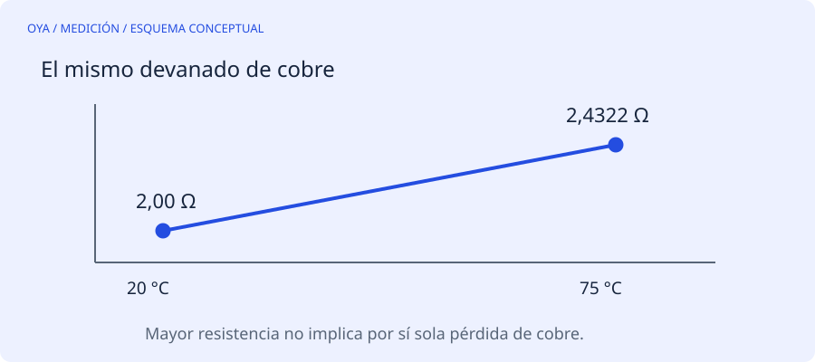

La resistencia cambia aunque el cobre esté sano
Un devanado de cobre caliente tiene mayor resistencia que el mismo devanado frío. Comparar una medida de recepción a 20 °C con otra tomada tras una prueba de carga puede sugerir un cambio inexistente en las conexiones o en la sección del conductor.
Para una estimación de cobre se puede usar R₂ = R₁·(234,5+T₂)/(234,5+T₁), con temperaturas en grados Celsius. El valor 234,5 °C es una constante convencional para cobre; no debe aplicarse automáticamente a aluminio o aleaciones diferentes. Si un procedimiento normativo o un fabricante especifica otra constante, prevalece ese criterio.
Ejemplo resuelto
Un devanado presenta 2,00 Ω a 20 °C. Referido a 75 °C, su resistencia estimada es 2,00·309,5/254,5 = 2,432 Ω. La subida aproximada del 21,6 % no significa que se haya perdido ese porcentaje de cobre: se debe a la temperatura.
Si las tres fases se midieron a temperaturas diferentes, ni siquiera una comparación porcentual entre ellas es directamente válida. El motor debe estar en un estado térmico conocido y razonablemente uniforme. La temperatura superficial de la carcasa no representa necesariamente la del devanado.
Mantener la misma conexión de medida
También hay que distinguir resistencia de fase y resistencia entre líneas. En una estrella equilibrada sin neutro accesible, medir entre dos líneas incluye dos fases en serie. En un triángulo equilibrado, una rama queda en paralelo con las otras dos en serie: la resistencia entre líneas es dos tercios de la resistencia de una fase.
Estas relaciones suponen tres ramas iguales y conexiones ideales. Una unión defectuosa, un circuito paralelo o una estructura especial exige analizar el esquema real. No compares una medida antes de poner puentes con otra después de ponerlos sin corregir esa diferencia de circuito.
Errores que pesan en valores pequeños
La resistencia de las puntas y de los contactos puede ser comparable con la del devanado. Un multímetro de dos hilos tiene limitaciones cuando la resistencia buscada es muy baja. La medición Kelvin de cuatro hilos reduce el efecto de las conexiones de prueba, pero sigue necesitando contactos estables y un equipo adecuado.
Anota qué bornes se midieron, conexión del motor, temperatura, instrumento y momento del ensayo. Repetir la medida bajo condiciones comparables aporta más información que guardar únicamente un número sin contexto.
Lo que una resistencia equilibrada no descarta
Tres lecturas parecidas no prueban aislamiento correcto entre espiras ni a masa. Un defecto incipiente puede no producir una diferencia detectable con el método usado. La resistencia de cobre, la resistencia de aislamiento y los ensayos especializados responden preguntas diferentes.
La calculadora de temperatura normaliza una lectura bajo el modelo descrito. No emite un aprobado y no convierte una medida de carcasa en temperatura de devanado. Para decidir aceptación se necesitan datos del fabricante, tolerancias y un conjunto de pruebas definido por personal cualificado.
Fuentes y alcance
Referencia de consulta: EASA/AEMT: mediciones y reparación de motores. Los ejemplos numéricos son educativos y no describen un trabajo realizado.